Calibration of Transfer Models
Inference_Direct.Rmd#> Loading required package: StanHeaders
#>
#> rstan version 2.32.7 (Stan version 2.32.2)
#> For execution on a local, multicore CPU with excess RAM we recommend calling
#> options(mc.cores = parallel::detectCores()).
#> To avoid recompilation of unchanged Stan programs, we recommend calling
#> rstan_options(auto_write = TRUE)
#> For within-chain threading using `reduce_sum()` or `map_rect()` Stan functions,
#> change `threads_per_chain` option:
#> rstan_options(threads_per_chain = 1)
#>
#> Attaching package: 'dplyr'
#> The following objects are masked from 'package:stats':
#>
#> filter, lag
#> The following objects are masked from 'package:base':
#>
#> intersect, setdiff, setequal, union
#> Linking to GEOS 3.12.1, GDAL 3.8.4, PROJ 9.4.0; sf_use_s2() is TRUE
#> terra 1.9.27
#>
#> Attaching package: 'terra'
#> The following object is masked from 'package:rstan':
#>
#> extract
#>
#> Attaching package: 'tidyterra'
#> The following object is masked from 'package:stats':
#>
#> filter
#>
#> Attaching package: 'scales'
#> The following object is masked from 'package:terra':
#>
#> rescale
#> The following object is masked from 'package:purrr':
#>
#> discard
#>
#> Attaching package: 'patchwork'
#> The following object is masked from 'package:terra':
#>
#> areaTransfer model
For the inference of transfer model, we use Bayesian Multiple Linear Regression model using Stan code.
Simple model
The likelihood is defined as:
Where:
- is the global intercept.
- is the slope coefficient for the continuous variable .
- is the specific coefficient (effect) associated with the category to which observation belongs.
- is the standard deviation of the error term (residuals).
The model specifies weakly informative priors for its parameters to regularize the inferences without overly constraining the data:
- Intercept:
- Continuous Slope:
- Categorical Coefficients: for each of the categories.
- Error Standard Deviation:
.
Because
is constrained to be strictly positive
(
real<lower=0> sigma;) , the Cauchy prior automatically becomes a truncated Half-Cauchy distribution.
Based on the structure of the likelihood function, this model makes the following classical linear regression assumptions:
- Linearity: The relationship between the continuous predictor and the mean of the response is strictly linear.
- Additivity (No Interactions): The effect of the continuous variable () and the categorical variable () are purely additive. The slopes are assumed to be identical across all categories; only the intercepts vary (parallel lines model).
- Normality of Errors: The residuals (the differences between observed and predicted values) are normally distributed.
- Homoscedasticity (Constant Variance): The standard deviation of the error term, , is assumed to be constant across all values of and across all categories.
- Independence: Each observation is conditionally independent given the parameters.
Direct fix-point model of Soil-Organism
Inference for Vegetation and Earthworm
For both species, we assumed a direct link:
In Veltman et al. (2007) the regressions for empirical aboveground plant parts (predominantly leaves) and earthworm concentrations with total soil concentrations is such as:
### Vegetation
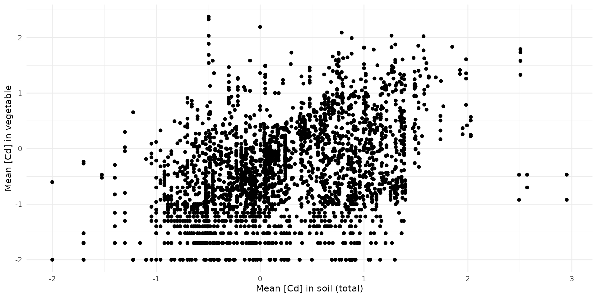
stan_data = list(
N = nrow(bappet_cd),
x = bappet_cd$log10_media_mean,
y = bappet_cd$log10_plant_mean,
M = 100,
x_sim = seq(-2, 3, length.out=100)
)
# fit_simple_veg_cd <- calibrate_simple(stan_data, chains=4, warmup=500, iter=1000)
# saveRDS(fit_simple_veg_cd, file="raw_data/fit_simple_veg_cd.rds")
fit_simple_veg_cd <- load_safe("raw_data/fit_simple_veg_cd.rds")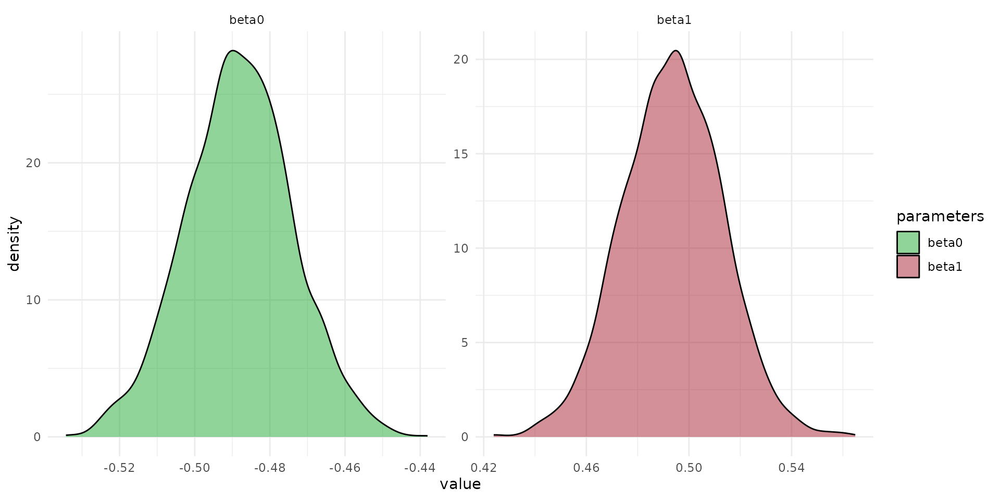
arr_sim <- rstan::extract(fit_simple_veg_cd, "y_sim")[[1]]
quants <- c(0.025, 0.5, 0.975)
q_mat <- apply(arr_sim, 2, quantile, probs = quants)
df_sim <- q_mat %>%
t() %>%
as.data.frame() %>%
mutate(
var_id = 1:n(),
x_sim = stan_data$x_sim
)
df_veltman = data.frame(
x_sim = stan_data$x_sim,
y_sim = -0.42 + 0.59 *stan_data$x_sim
)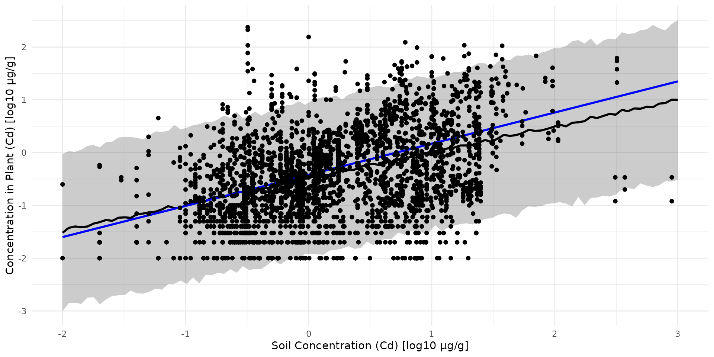
Earthworm
data("earthworm_cd")
stan_data = list(
N = nrow(earthworm_cd),
x = earthworm_cd$log10_cd_soil,
y = earthworm_cd$log10_cd_worm,
M = 100,
x_sim = seq(-2, 3, length.out=100)
)
# fit_simple_worm_cd <- calibrate_simple(stan_data, chains=4, warmup=500, iter=1000)
# saveRDS(fit_simple_worm_cd, file="raw_data/fit_simple_worm_cd.rds")
fit_simple_worm_cd <- load_safe("raw_data/fit_simple_worm_cd.rds")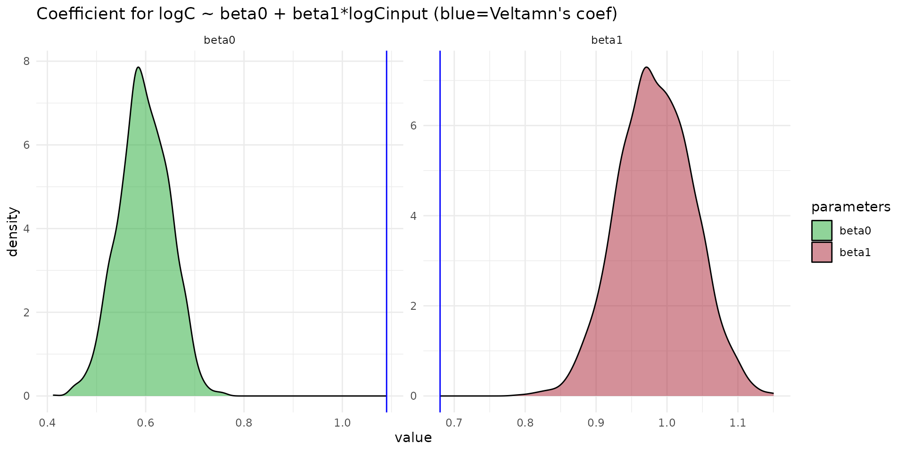
arr_sim <- rstan::extract(fit_simple_worm_cd, "y_sim")[[1]]
quants <- c(0.025, 0.5, 0.975)
q_mat <- apply(arr_sim, 2, quantile, probs = quants)
df_sim <- q_mat %>%
t() %>%
as.data.frame() %>%
mutate(
var_id = 1:n(),
x_sim = stan_data$x_sim
)
df_veltman = data.frame(
x_sim = stan_data$x_sim,
y_sim = 1.09 + 0.68 *stan_data$x_sim
)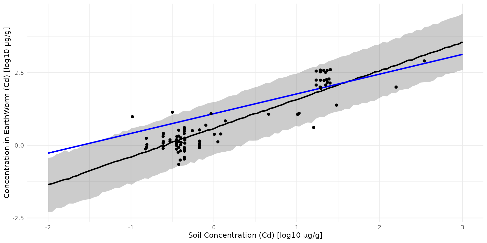
Soil -> Micro-Mammals
data(sf_micromammals)
# ADD LOG_10 COLUMNS
sf_train <- sf_micromammals |>
dplyr::mutate(
log10_cd_S = log10(cd_S),
log10_cd_WB_FW = log10(cd_WB_FW))
# ADD GROUP HERBIVOE vs INSECTIVORE
lookup_table = data.frame(
group = c('shrew', 'mouse', 'vole'),
food = c('insectivore', 'herbivore', 'herbivore'),
food_cat_num = c(2,1,1))
sf_train = dplyr::left_join(sf_train, lookup_table, by='group')
stan_data = list(
N = nrow(sf_train),
K = 2,
x = sf_train$log10_cd_S,
y = sf_train$log10_cd_WB_FW,
x_cat = sf_train$food_cat_num,
M = 100,
x_sim = seq(min(sf_train$log10_cd_S), max(sf_train$log10_cd_S), length.out=100)
)
# fit_direct <- calibrate_direct(stan_data, chains=4, warmup=500, iter=1000)
# saveRDS(fit_direct, file="raw_data/fit_direct_cd.rds")
fit_direct <- load_safe("raw_data/fit_direct_cd.rds")Equation parameters
The equation of the direct model is given by:
fit_pars <- rstan::extract(fit_direct, c("beta0", "beta1", "beta_cat"))
df_pars <- dplyr::bind_rows(list(
data.frame(value=fit_pars$beta0, par="beta0"),
data.frame(value=fit_pars$beta1, par="beta1"),
data.frame(value=fit_pars$beta_cat[,1], par="beta_herbivore"),
data.frame(value=fit_pars$beta_cat[,2], par="beta_insectivore")
))
ggplot(data=df_pars) +
theme_minimal() +
scale_x_log10() +
scale_fill_manual(
name="parameters",
values=c("#22aa33", "#aa2233","#3322aa", "#2233aa")) +
geom_density(aes(value, fill=par), alpha=0.5)
#> Warning in transformation$transform(x): NaNs produced
#> Warning in scale_x_log10(): log-10 transformation introduced
#> infinite values.
#> Warning: Removed 3131 rows containing non-finite outside the scale range
#> (`stat_density()`).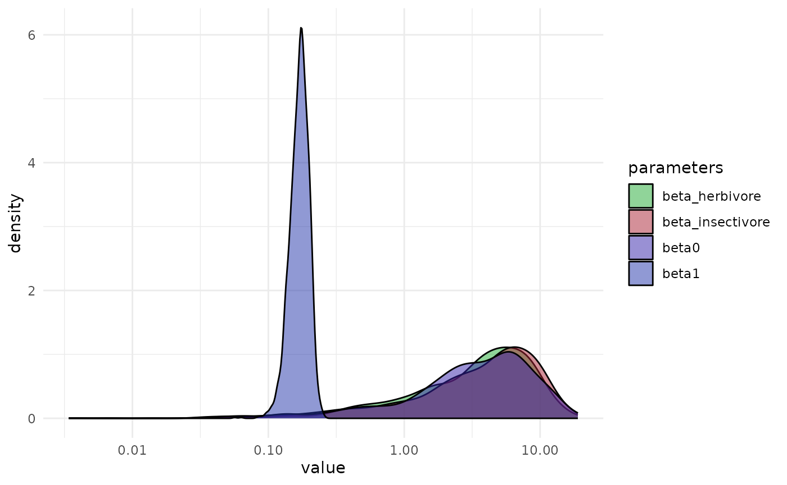
Observation vs Prediction
arr_sim <- rstan::extract(fit_direct, "y_sim")[[1]]In the study of Veltman et al. (2007), an equation is given by
$$ C_{}0.68·log(Csoil)1.09 $$
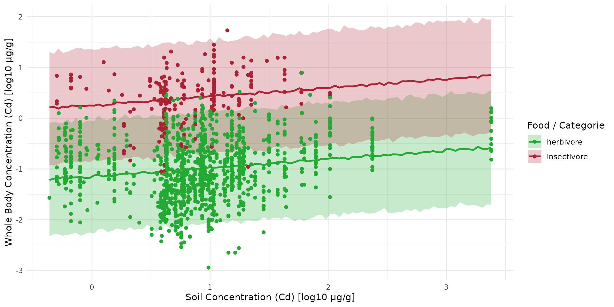
Predictive Test
The Cd concentration in body, dry weight, µg.g-1, is calculated from dat*a measured using equation given in Veltman et al. 2007 in Environmental Toxicology and Chemistry:
- voles:
- shrews:
Then, the Cd concentration in body, fresh weight, µg.g-1, is calculated from data measured using the Dry/fresh ratio: $Wfresh = Wdry $
# ADD GROUP HERBIVORE vs INSECTIVORE
lookup_table = data.frame(
Species = c('APSY', 'CRRU', 'SOMI'),
group = c('vole', 'shrew', 'shrew'),
coef_WB_CD_liver = c(0.054, 0.07, 0.07),
coef_WB_CD_kidney = c(0.013, 0.019, 0.019),
food = c('herbivore', 'insectivore', 'insectivore'),
food_cat_num = c(2,1,1))
sf_test = dplyr::left_join(sf_metaleurop_2025, lookup_table, by='Species') |>
dplyr::mutate(cd_WB_DW = 1/0.8*(coef_WB_CD_liver*CdInLiver + coef_WB_CD_kidney*CdInKidneys)) |>
dplyr::mutate(cd_WB_FW = cd_WB_DW*1/4) |>
dplyr::mutate(log10_cd_WB_FW = log10(cd_WB_FW))Collect corresponding soil value
sf_test <- st_transform(sf_test, crs(ground_cd))
centroids <- st_centroid(sf_test)
#> Warning: st_centroid assumes attributes are constant over geometries
val_centroid <- terra::extract(ground_cd, centroids)
val_mean_trapline <- terra::extract(ground_cd, vect(sf_test), fun = mean, na.rm = TRUE)
sf_test$log10_cd_S_centroid <- val_centroid[, 2]
sf_test$log10_cd_S_meanLine <- val_mean_trapline[, 2]Big points are
#> Warning: Removed 7 rows containing missing values or values outside the scale range
#> (`geom_point()`).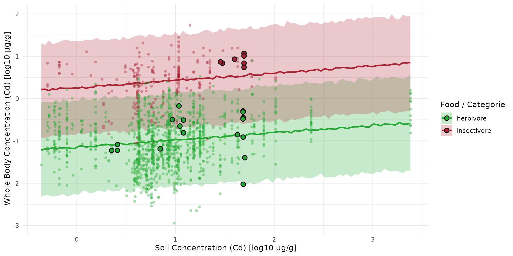
Direct dist-buffer model of Soil-Organism
For moving organism as micro-mammals, the idea here is to consider a buffer around the traplines. Let 100m first.
Collect Buffer mean Value
sf_train_b <- st_transform(sf_metaleurop_2010, crs(ground_cd))
sf_train_b100 <- st_buffer(sf_train_b, dist = 100)
centroids <- st_centroid(sf_train_b)
#> Warning: st_centroid assumes attributes are constant over geometries
val_centroid <- terra::extract(ground_cd, centroids)
val_mean_trapline <- terra::extract(ground_cd, vect(sf_train_b), fun = mean, na.rm = TRUE)
val_mean_b100 <- terra::extract(ground_cd, vect(sf_train_b100), fun = mean, na.rm = TRUE)
sf_train_b100$log10_cd_S_centroid <- val_centroid[, 2]
sf_train_b100$log10_cd_S_meanLine <- val_mean_trapline[, 2]
sf_train_b100$log10_cd_S_meanb100 <- val_mean_b100[, 2]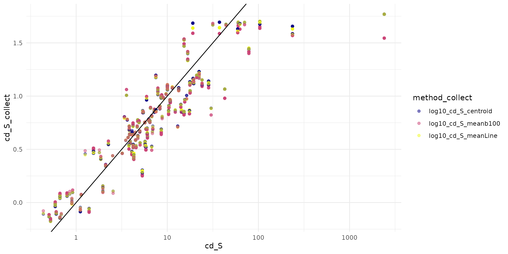
Compute inference
d00 = sf_train_b100 %>%
dplyr::mutate(
log10_cd_S = log10(cd_S),
log10_cd_WB_FW = log10(cd_WB_FW),
)
lookup_table = data.frame(
group = c('shrew', 'mouse', 'vole'),
food = c('insectivore', 'herbivore', 'herbivore'),
food_cat_num = c(2,1,1))
d = dplyr::left_join(d00, lookup_table, by='group')
stan_data = list(
N = nrow(d),
K = 2,
x = d$log10_cd_S_meanb100,
y = d$log10_cd_WB_FW,
x_cat = d$food_cat_num,
M = 100,
x_sim = seq(min(d$log10_cd_S), max(d$log10_cd_S), length.out=100)
)
# fit_direct_b100 <- calibrate_direct(stan_data, chains=4, warmup=500, iter=1000)
# saveRDS(fit_direct_b100, file="raw_data/fit_direct_b100_cd.rds")
fit_direct_b100 <- load_safe("raw_data/fit_direct_b100_cd.rds")
arr_sim_b100 <- rstan::extract(fit_direct_b100, "y_sim")[[1]]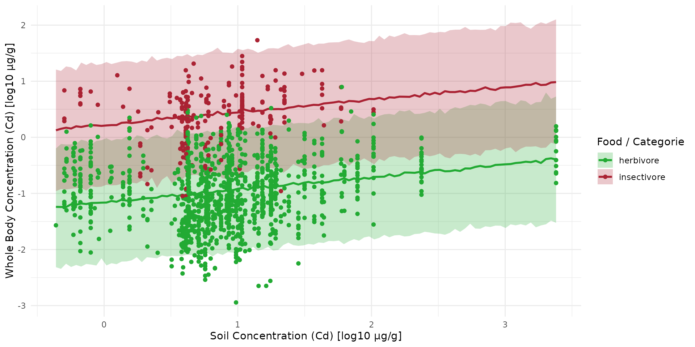
Compare prediction with new data
sf_full <- data.frame(
food = c(sf_train$food, sf_test$food),
set = c(rep("train", nrow(sf_train)), rep("test", nrow(sf_test))),
log10_cd_S = c(sf_train$log10_cd_S, sf_test$log10_cd_S_meanLine),
log10_cd_WB_FW = c(sf_train$log10_cd_WB_FW, sf_test$log10_cd_WB_FW)
)
sf_full$set <- factor(sf_full$set, levels = c("train", "test"))
plt_full <- plt_sim +
geom_point(
data = subset(sf_full, set == "train"),
aes(x = log10_cd_S, y = log10_cd_WB_FW, color = food),
shape = 16, alpha = 0.4, size = 1.5
) +
geom_point(
data = subset(sf_full, set == "test"),
aes(x = log10_cd_S, y = log10_cd_WB_FW, fill = food),
shape = 21, color = "black", stroke = 0.8, size = 2.5
)
plt_full
#> Warning: Removed 7 rows containing missing values or values outside the scale range
#> (`geom_point()`).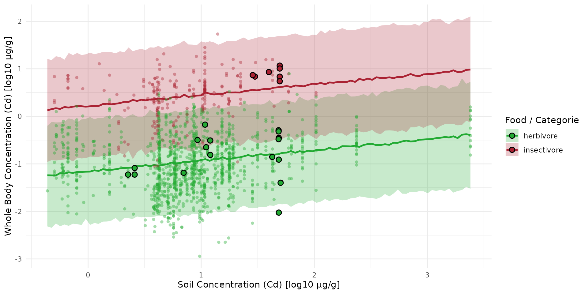
Mapping
Here we are going to compute the map of predicted concentration over the landscape.
Let first recapture the value of median:
fit_pars <- rstan::extract(fit_direct_b100, c("beta0", "beta1", "beta_cat"))
df_pars <- dplyr::bind_rows(list(
data.frame(value=fit_pars$beta0, par="beta0"),
data.frame(value=fit_pars$beta1, par="beta1"),
data.frame(value=fit_pars$beta_cat[,1], par="beta_herbivore"),
data.frame(value=fit_pars$beta_cat[,2], par="beta_insectivore")
))
dp_q50 <- df_pars %>%
dplyr::group_by(par) %>%
dplyr::summarise(median_value = median(value, na.rm=TRUE))
ls_q50 <- setNames(as.list(dp_q50$median_value), dp_q50$par)
names_hab = c("soil", "herbivore", "insectivore")
list_habitat <- lapply(names_hab, function(i) ground_cd)
stack_habitat <- raster_stack(list_habitat, names_hab)
trophic_df <- trophic() |>
add_link("soil", "herbivore") |>
add_link("soil", "insectivore")
spcmdl_direct <- spacemodel(stack_habitat, trophic_df)
direct_kernels <- list(soil = NA, herbivore = NA, insectivore = NA)
direct_intakes <- intake(spcmdl_direct,
"soil -> herbivore" = ~ ls_q50$beta0 + ls_q50$beta1*x + ls_q50$beta_herbivore*x,
"soil -> insectivore" = ~ ls_q50$beta0 + ls_q50$beta1*x + ls_q50$beta_insectivore*x,
default = 1, # for all other default is 1
normalize = FALSE # TRUE would weight every link to sum at 1
)
spcmdl_direct_risk <- transfer(
spcmdl_direct,
direct_kernels,
direct_intakes,
exposure_weighting="potential")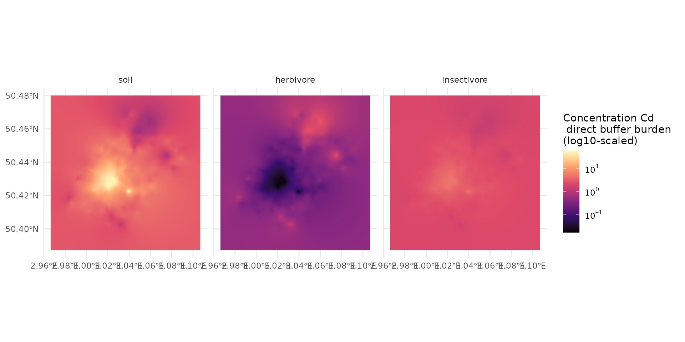
Direct kernel-buffer model of Soil-Organism
data("ocsge_species_dict")Trophic Transfer
Plant -> Vole & Earthworm -> Shrew
In Veltman et al. (2007) the regressions for empirical aboveground plant parts (predominantly leaves) and earthworm concentrations with total soil concentrations is such as: